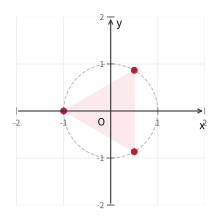
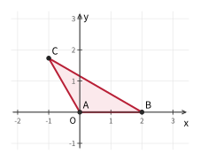
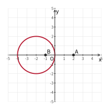

別冊章末問題の解答
1. \(z_1=2 \sqrt{2} + 2 \sqrt{2} i,\ z_2=- \sqrt{2} + \sqrt{2} i\) のとき、\(z_1z_2\) と \(\dfrac{z_1}{z_2}\) を、極形式を用いて計算せよ。
極形式にする
\(z=r(\cos\theta+i\sin\theta)\)。
\[z_1=4\left(\cos\dfrac{\pi}{4}+i\sin\dfrac{\pi}{4}\right),\qquad z_2=2\left(\cos\dfrac{3 \pi}{4}+i\sin\dfrac{3 \pi}{4}\right)\]積
\(z_1z_2=r_1r_2\{\cos(\theta_1+\theta_2)+i\sin(\theta_1+\theta_2)\}\)。
\[z_1z_2=8\left(\cos\pi+i\sin\pi\right)=-8\]商
\(\dfrac{z_1}{z_2}=\dfrac{r_1}{r_2}\{\cos(\theta_1-\theta_2)+i\sin(\theta_1-\theta_2)\}\)。
\[\dfrac{z_1}{z_2}=2.0\left(\cos- \dfrac{\pi}{2}+i\sin- \dfrac{\pi}{2}\right)=- 2 i\]（例題1の型）
【答案】
\[z_1z_2=-8,\ \dfrac{z_1}{z_2}=- 2 i\]答
2. \(\left(\sqrt{3} - i\right)^{9}\) を計算せよ。
極形式にする
\[|z|=2,\quad \arg z=- \dfrac{\pi}{6}\]\[z=2\left(\cos- \dfrac{\pi}{6}+i\sin- \dfrac{\pi}{6}\right)\]ド・モアブルの定理
\(z^n=r^n(\cos n\theta+i\sin n\theta)\)。
\[z^{9}=\left(2\right)^{9}\left\{\cos\left(9\cdot- \dfrac{\pi}{6}\right)+i\sin\left(9\cdot- \dfrac{\pi}{6}\right)\right\}\]値を求める
\[z^{9}=512\left(\cos- \dfrac{3 \pi}{2}+i\sin- \dfrac{3 \pi}{2}\right)=512 i\]（例題2の型）
【答案】
\[512 i\]答
3. 方程式 \(z^{3}=-1\) を解け。
右辺を極形式にする
\[-1=1\left(\cos\pi+i\sin\pi\right)\]解を極形式で書く
\(z=1(\cos\phi+i\sin\phi)\) とおくと、ド・モアブルより \(z^{3}=1(\cos3\phi+i\sin3\phi)\)。
\[3\phi=\pi+2k\pi\ \Rightarrow\ \phi=\dfrac{\pi+2k\pi}{3}\quad(k=0,1,\cdots,2)\]\(k\) に値を代入する
\[k=0:\ z=1\left(\cos\dfrac{\pi}{3}+i\sin\dfrac{\pi}{3}\right)=\dfrac{1}{2} + \dfrac{\sqrt{3} i}{2}\\ k=1:\ z=1\left(\cos\pi+i\sin\pi\right)=-1\\ k=2:\ z=1\left(\cos\dfrac{5 \pi}{3}+i\sin\dfrac{5 \pi}{3}\right)=\dfrac{1}{2} - \dfrac{\sqrt{3} i}{2}\]解は複素数平面上で、原点中心・半径 \(1\) の円に内接する正 \(3\) 角形の頂点。

（例題3の型）
【答案】
\[z=\dfrac{1}{2} + \dfrac{\sqrt{3} i}{2},\ -1,\ \dfrac{1}{2} - \dfrac{\sqrt{3} i}{2}\]答
4. 複素数平面上の3点 \(A(0),\ B(2),\ C(-1 + \sqrt{3} i)\) について、\(\dfrac{\gamma-\alpha}{\beta-\alpha}\) を計算し、△\(ABC\) がどんな三角形か答えよ。
比 \(\dfrac{\gamma-\alpha}{\beta-\alpha}\) を計算する
\[w=\dfrac{\gamma-\alpha}{\beta-\alpha}=\dfrac{-1 + \sqrt{3} i}{2}=- \dfrac{1}{2} + \dfrac{\sqrt{3} i}{2}\]絶対値と偏角
\(|w|=\dfrac{AC}{AB},\quad \arg w=\angle BAC\)（\(A\) を中心に \(B\) から \(C\) へ回す角）。
\[|w|=1,\quad \arg w=\dfrac{2 \pi}{3}\]三角形の形
\[AB=AC,\ \angle A=120^\circ\text{ の二等辺三角形}\]
（例題4の型）
【答案】
\[AB=AC,\ \angle A=120^\circ\text{ の二等辺三角形}\]答
5. 方程式 \(|z-(2)|=2\,|z-(-1)|\) を満たす点 \(z\) 全体はどんな図形か。
\(|z-\alpha|=k|z-\beta|\) の2乗
\(z=x+yi\) とおいて両辺を2乗する。
\[(x-\left(2\right))^2+(y-\left(0\right))^2=4\left\{(x-\left(-1\right))^2+(y-\left(0\right))^2\right\}\]展開して整理する
\[- 3 x^{2} - 12 x - 3 y^{2}=0\]\[x^{2} + 4 x + y^{2}=0\]円の方程式にする
\[(x-\left(-2\right))^2+(y-\left(0\right))^2=4\]中心 \(-2\)、半径 \(2\) の円（アポロニウスの円）。

（例題5の型）
【答案】
\[\text{中心 }-2\text{、半径 }2\text{ の円}\]答